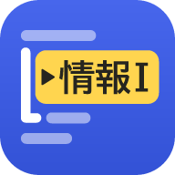

うごく情報Ⅰ
共通テスト「情報Ⅰ」第3問（プログラミング）対策のiPhoneアプリ
- 基本無料
- 広告なし
- オフライン
- 登録不要
このアプリについて
「共通テスト用プログラム表記」で書かれたプログラムを1行ずつ実行し、変数や配列の値がどう変わるかを確かめながら学べるアプリです。
- トレーサー：ステップ実行と、トレース表の自動作成
- 選択肢を当てはめて実行：間違えた選択肢で結果がどう変わるかを確認
- 本番形式のオリジナル問題20題、時間を計って解く練習
- 表記レッスン、数値が毎回変わるドリル
- 分野別の正答率、学習のカレンダー、復習リスト
トレーサー、プレイグラウンド、表記レッスン、ドリル、記録と、本番形式の問題のうち6題（01〜06）は無料で使えます。残りの14題（07〜20）と今後追加される問題は、App内課金の「プレミアム」（買い切り）で解けるようになります。
よくある質問
インターネットに接続する必要はありますか？
学習に使う機能は、すべてオフラインで動作します。インターネット接続が必要なのは、プレミアム（App内課金）の価格の表示、購入、購入の復元のときだけです。このときの通信は、AppleのApp Storeとの間で行われます。購入したあとは、オフラインでもすべての問題を解けます。
料金はかかりますか？
アプリのダウンロードは無料です。トレーサー、プレイグラウンド、表記レッスン（10回）、ドリル（「5分スピードトレース」を含みます）、記録と、本番形式の問題6題（01〜06。解説と「時間を計って解く」を含みます）は、お支払いなしで使えます。
本番形式の残りの14題（07〜20）と、今後追加される本番形式の問題は、App内課金の「プレミアム」で解けるようになります。価格は980円（税込）の買い切りです。
- 一度だけの購入です。自動で更新・請求される定期購入（サブスクリプション）ではありません。
- お支払いはAppleが処理し、お使いのApple アカウントに請求されます。購入の前に、アプリの購入画面に表示される価格をご確認ください。
- 広告は表示されません。
- 未成年の方は、保護者の方の同意を得てから購入してください。
購入の復元：アプリを入れ直したときなどにプレミアムが使えない場合は、ホームの右上にある歯車のボタンから「設定」を開き、「プレミアム」の「購入を復元」をタップしてください。購入したApple アカウントでサインインしていれば、追加のお支払いなしで使えるようになります。
ご家族での利用：お子さまのApple アカウントで「承認と購入のリクエスト」がオンになっている場合は、購入ボタンを押すと保護者の方に承認のリクエストが届きます。保護者の方が承認すると、自動でプレミアムが使えるようになります。なお、プレミアムはファミリー共有の対象ではないため、購入したApple アカウントでのみ使えます。
機種変更をしたら、購入したプレミアムはどうなりますか？
プレミアムの購入は、お使いのApple アカウントに記録されています。新しいiPhoneでも、同じApple アカウントでサインインしていれば、インターネットに接続した状態でアプリを開くと、多くの場合は自動で使えるようになります。使えるようにならないときは、「設定」の「プレミアム」にある「購入を復元」をタップしてください。もう一度お支払いが発生することはありません。
別のApple アカウントでは、購入したプレミアムは使えません。学習の記録と設定は、iCloudバックアップなどの端末のバックアップから新しいiPhoneに移行すると引き継がれます。
購入を取り消したい（返金を受けたい）ときは？
App内課金の返金は、Appleが受け付けています。Appleのサポートページ「Appleから購入したアプリやコンテンツの返金手続きをする」の手順でリクエストしてください。開発者が購入を取り消したり、返金したりすることはできません。返金されると、プレミアムの問題には再び鍵がかかります（学習の記録は残ります）。
アカウントの登録は必要ですか？
必要ありません。インストールしてすぐに使えます。プレミアムの購入も、お使いのApple アカウントで行うため、このアプリ用のアカウントを作る必要はありません。
学習の記録はどこに保存されますか？
お使いのiPhoneの中だけに保存されます。開発者を含め、外部に送信されることはありません。詳しくはプライバシーポリシーをご覧ください。
アプリを削除すると、記録はどうなりますか？
アプリを削除すると、端末内の学習記録と設定はすべて消去されます。記録を書き出す機能はありませんが、学習記録と設定はiCloudバックアップなどの端末のバックアップに含まれるため、バックアップから新しいiPhoneに移行すると引き継がれます。
プレミアムの購入はApple アカウントに記録されているので、アプリを削除してもなくなりません。入れ直したあとは、アプリを開くと自動で、または「購入を復元」で使えるようになります。
記録だけを消すことはできますか？
アプリの「設定」→「学習記録をリセット」で、学習の記録だけを消去できます（設定とプレミアムの購入は残ります）。この操作は取り消せません。
収録されている問題は過去問ですか？
いいえ。すべて本アプリのオリジナル問題です。共通テストの形式を参考に作成し、プログラムの動きで決まる正解は、アプリに組み込んだプログラムで実行して確かめています。実際の試験の出題内容を保証するものではありません。
「共通テスト用プログラム表記」にはどこまで対応していますか？
大学入試センターが公表している資料をもとに解釈して実装しています。資料で動きが決まっていない書き方を実行したときは、その旨をアプリ内で表示します。
iPadやAndroidで使えますか？
iPhone向けのアプリです。iPadでは、iPhone用の画面のまま動作します。Android版はありません。
問題や解説の誤りを見つけました。
お手数ですが、下記のお問い合わせ先までお知らせください。問題の名前と設問（例：「床タイルと最大公約数」問2）を書いていただけると助かります。
お問い合わせ
ご質問・不具合のご報告・ご意見は、メールでお送りください。アプリの「設定」→「お問い合わせ」からも送れます。
sltdwzy@outlook.com不具合のご報告には、アプリのバージョン（「設定」の下部に表示）、iPhoneの機種とiOSのバージョン、操作した画面を書いていただけると、原因を調べやすくなります。返信までに数日かかることがあります。
特定商取引法に基づく表記
- 販売業者の氏名・所在地・電話番号
- ご請求があれば、電子メールで遅滞なくお知らせします。下記の連絡先までご連絡ください。
- 連絡先
- sltdwzy@outlook.com
- 販売価格
- App内課金「プレミアム」（買い切り）：980円（税込）。購入の前に、アプリの購入画面に表示される価格をご確認ください。
- 商品代金以外の必要料金
- インターネット接続の通信料
- お支払いの方法と時期
- App Store（Apple）の決済でお支払いいただきます。お支払いの時期は、Appleの定めによります。
- 提供の時期
- 購入の手続きが完了すると、すぐに使えます。
- 返品・キャンセル
- デジタルコンテンツのため、購入後の返品はできません。返金はAppleが受け付けています（Appleのサポートページ）。
- 動作環境
- App Storeのページに記載されているiOSを搭載したiPhone
ご注意
- 本アプリは個人が開発したもので、独立行政法人大学入試センターとは関係ありません。
- 収録している問題はすべて本アプリのオリジナルです。実際の試験の出題内容や形式を保証するものではありません。
- 本アプリの利用によって生じた結果について、開発者は責任を負いかねます。